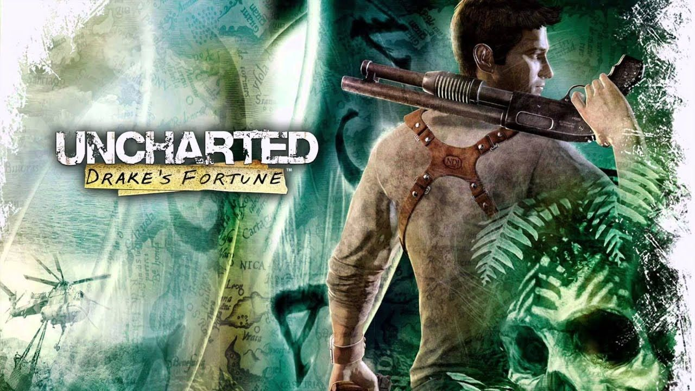

- Saga Uncharted
- Uncharted: Drake's Fortune 
- Uncharted 2: El reino de los ladrones
- Uncharted 3: La traición de Drake
- Uncharted 4: El desenlace del ladrón
- Cyberpunk 2077
- The Witcher 3: Wild Hunt
- Red Dead Redemption 2
Esta saga de Naughty Dog marca un antes y un después en el género de acción y puzles, siguiendo la historia del protagonista Nathan Drake, cuyo apellido nos puede resultar familiar si conocemos el mundo naval del siglo XVI o estudiamos la derrota de la Armada Invencible de Felipe II frente a los navíos ingleses de Isabel I en Historia de España


Muy odiado en su release por las espectativas que CD Project Red había dejado en la campaña de marketing, las cuales no se cumplieron, pero han sabido darle la vuelta a la tortilla y arreglar los innumerables bugs y problemas del juego, dejándonos disfrutar de la increíble inmersión que ofrece Nightcity y la historia de V sin que se te cierre el juego. Yo me lo pasé entero de salida y aunque me comí muchos bugs (sigo con pesadillas de la misión de taxis de Delamain), disfruté bastante del juego, y aunque respeto la opinión que tienen muchas personas sobre el fraude que fue este juego de salida, yo siempre confié en que CD Project lo arreglaría. Me gustaría volver a pasármelo ahora que está bien y disfrutar de la inmersión que te ofrece este juego.

Aquí esta la Soundtrack del juego, que tiene buena banda sonora
El buque insignia del estudio polaco CD Project Red, y aunque existen dos precuelas, no fueron capaces de cautivar a la gente de la manera que lo consigue la última entrega. En ella sigues la historia del brujo Gerald de Rivia, quien se dedica a cazar monstruos por monedas, pero en esta historia se encargará de encontrar y entrenar a Cirilla, más conocida como Ciri , una joven a la que trata como una hija y que posee poderes sobrenaturales perseguidos por la cacería salvaje

Su precursor continúa la historia de este juego. Si no jugaste ninguno de los dos empezaría por el Red Dead Redemption 2. En él te metes directamente en los comienzos de la industrialización americana y, más relevante en esta historia, el comienzo de la caída del salvaje oeste americano.
Seguimos la historia de Arthur Morgan, miembro de una banda de forajidos que se ganan la vida a base de robar diligencias, bancos, trenes, en definitiva todo lo que se le ponga por delante. Tanta revuelta acaba atrayendo problemas, pero confío que mantengas el honor alto y acabes viendo a un ciervo.